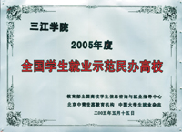
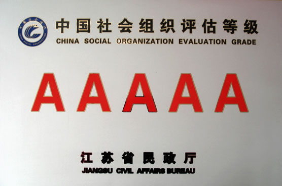
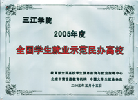
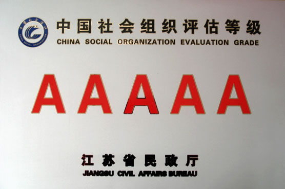

1992年的春天，草长莺飞、万物复苏，大自然用她那独特的画笔勾勒出了春花葳蕤、娇艳芳菲的春天画卷。东南大学陶永德、戚焕林，南京大学丁承慜，南京职工大学谢明才四位退休和即将退休的教授、教育管理工作干部发起并创办三江大学。很多人知道办大学时，都认为是天方夜谭，也有人认为他们是吃了豹子胆。创办者们坚定地认为人生在世，就应该为国家、为社会做一些有益的事情。创办民办大学，一方面可以为国家培养人才；另一方面，也可以为改革髙等学校体制闯出一条新路。他们想，不要国家的一分钱，为国家减轻高等教育的经济负担，同时也适应了人民的要求，满足老百姓子女们的求学欲望，是多么好的一件事！他们要推动国家公办和民办高校共进的体制的发展，要和公办学校互相学习、相互提髙，为科教兴国的伟大目标而奋斗。
创校之初
改革开放大潮中诞生
-
1992年春天
三江大学创办
-
1993年6月
筹建并试招生
1993年6月江苏省政府同意三江大学筹建并试招生。
-
1995年4月
批准建校
1995年4月由原国家教委和江苏省人民政府批准正式建校，是江苏省第一所民办普通高校，也是当时全国最早创办的一批民办高校之一。
-
1993.9——1994.8
凤凰西街的创立阶段
1993年9月至1994年8月，学校租用位于南京凤凰西街的南京商业中专学校的部分校舍，创立了三江大学。
-
1994.9——1999.7
北崮山的创业阶段
1994年9月至1999年7月，学校租用位于南京中央门外原第八干休所的房屋办学，期间学校正式经国家和省政府批准建校，在此阶段学校完成初期创业，学校事业稳步发展。
-
1999.8——至今
铁心桥发展阶段
1999年8月，三江学院铁心桥新校区建成，欧式风格的建筑，典雅壮丽，与周围的青山绿水融为一体。
铁心桥新校区的建成，拓展了学校的办学空间，为学校规模发展和质量提升提供了条件保障。三江学院升格为本科髙校、进入万人規模大学行列、接受教育部本科教学水平评估都在铁心桥校区启用后实现，在这里三江学院事业进入了快速发展的快车道。
从1992年创办至今，短短25年间,学校便从一艘小船成长为巨轮,如今这艘巨轮正沿着创建特色鲜明的高水平应用型民办大学的方向不断乘风破浪前行。
校名由来
三江学院校名的由来
-
1992年
“三江”由来
1992年，东南大学陶永德、戚焕林，南京大学丁承慜，南京职工大学谢明才四位退休和即将退休的教授、教育管理工作干部发起并创办三江大学。创办者认为，作为全省第一所私立大学，又是办在南京这个有着深厚文化积淀的城市中，学校的名称是否响亮，至关重要。最初，大家认为，以地区或有纪念意义的事情、人物来命名，可能比较适宜，于是就提出以“金陵” “扬子” “钟山” “石城”“建康”等作为学校名称，但总觉得历史味过重而文化内涵不足。
-
1992年
私立三江大学
1992年，适逢南京大学、东南大学、南京师范大学等9所髙校建校90周年庆典，这些髙校的历史均可溯源到20世纪初两江总督张之洞先生在南京创办的三江师范学堂。南京大学、东南大学等校师生都熟知这段历史并引为自豪。大家由此想到“三江”这个名称。认为学校若以“三江”命名，可有两层含义：其一南京大学、东南大学及我省诸多髙校，其源均可上溯至1902年创建的三江师范学堂，从这个意义上说，学校筹办者多为“三江传人”，三江传人办三江大学，旨在继承“三江事业”，造福子孙后代，应是顺理成章、功德无量之举。
其二，“三江”泛指长江中下游的苏、浙、皖、赣、沪、湘、鄂等省市，覆盖整个长江三角洲，辐射长江中下游，此时此地创办一所民办大学，正是为我国现代化建设事业发展提供人力资源和智力支持，意义可谓深远。追本溯源，100年前，内忧外患的晚清时期，外国列强的坚船利炮唤起了中国人的强国梦，一批先进知识分子打起“教育救国”的旗帜，“三江师范学堂”应运而生。整整90年后的1992年，中国进入了改革开放的进程，人们在这条强国之路上又举起了“科教兴国”的大旗，“三江大学”应运而生。从三江师范学堂的始出，到“三江大学”的又出，说明了一个道理：学脉系于国脉，国家要强盛，科教必先行。校以“三江”命名，正是因为办学者以“三江传人”自许，以三江腾飞自期。经过反复思考和议论，最后确定学校名为“私立三江大学”。
-
1995年4月4日
民办三江学院
1995年4月4日，原国家教委和江苏省人民政府正式批准三江学院成立，定名“民办三江学院”。
-
2002年
三江学院
2002年，民办三江学院经教育部批准升格为本科高校，定名为“三江学院”。
三江学院校名由杰出的书法家、佛教领袖、著名的社会活动家赵朴初先生亲笔题写。
三江发展
学校的发展势如破竹
-
荣耀三江
荣耀三江
 



-
1992年
1992年，学校发起并筹办。
-
1993年6月
筹建并试招生
1993年6月，江苏省政府同意三江大学筹建并试招生。
-
1995年4月
1995年4月，原国家教委正式批准三江学院建校。
-
1999年9月
1999年9月，建成并启用铁心桥新校区。
-
2002年
2002年，三江学院经过国家教育部批准升格为本科高校。
-
2005年
2005年，进入万人规模大学行列。
-
2006年
2006年，三江学院通过江苏省学士学位授权单位评审。
2007年，三江学院作为全国首家民办本科高校接受了教育部普通高校本科教学工作水平评估，并以良好的等级通过。短短的十多年的时间，学校经历了创立、创业和发展三个阶段，三易校址，学校的规模、质量、结构、效益协调发展，学校品牌影响力和社会美誉度不断提升，得到社会和学生家长的普遍认可。
-
2007年5月
2007年5月，三江学院作为全国首家民办本科高校接受了教育部普通高校本科教学工作水平评估。
-
2008年3月
2008年3月以良好的成绩通过教育部普通高等学校本科教学工作水平评估。
2008年3月以良好的成绩通过教育部普通高等学校本科教学工作水平评估。短短的十多年的时间，学校经历了创立、创业和发展三个阶段，三易校址，学校的规模、质量、结构、效益协调发展，学校品牌影响力和社会美誉度不断提升，得到社会和学生家长的普遍认可。
-
2011年
2011年学校成为江苏省高等教育综合改革实验区、江苏省“建立现代大学制度”项目的试点高校。
-
2017年
2017年学校成为江苏省硕士学位研究生授权单位建设点。
-
2018年
2018年学校在省编制部门登记为事业单位法人。
-
旧时三江